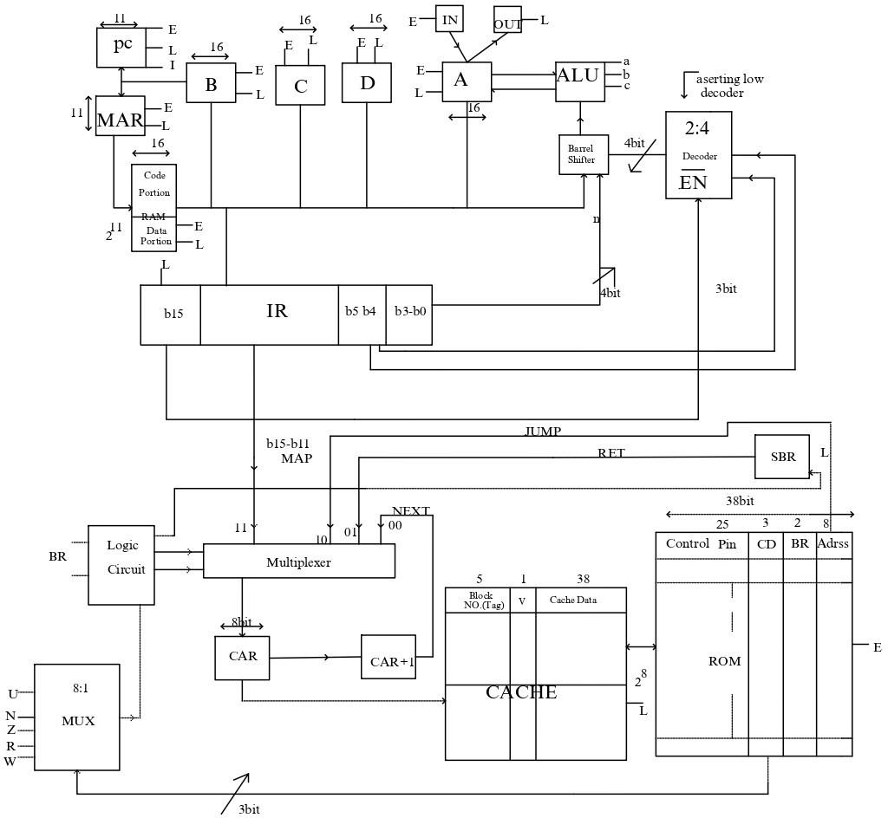

About the Project
The Hypothetical Processor Simulation project is a computer architecture project that involves designing and simulating a hypothetical processor using a C++ console application. The goal of this project is to develop a virtual processor model capable of executing macroinstructions defined specifically for this processor.
Architecture layout
Processor Specification
- Register (i). Special register:
- PC (program counter) – 11bit
- MAR (memory address register) – 11bit
- IR (instruction register) – 16bit
- CAR (control address register) – 8bit
- SBR (Subroutine register) – 8bit
- General purpose register: B, C, D, A (accumulator) – 16bit
- I/O register:
- INR (input register) – 16bit
- OUTR (output register) – 16bit
- Memory:
- RAM- 4KiB: [2k*16 bit]
- Data portion (0x065-0x7FF)
- Code portion (0x000-0x064)
- ROM- 256*38 bit
- Cache -
- Tag: 5bit
- Offset: 3bit
- Cache line: 2
- Block size: 8*38 bit (offset 3 bit)
- Total capacity: 16*[5(tag)+1(Valid bit) + 38(cache Data width)]
- Data cache capacity: 38*2*8
- Look through model
- Fully associative organization
- RAM- 4KiB: [2k*16 bit]
- Flag: N (negative), Z (zero), V (overflow) - based on output of ALU, R, W (read write flag based on I/O operation)
- ALU (arithmetic logic unit): works with accumulator with 16 bit
- Barrel shifter: one input of ALU is passed through the barrel shifter
General Working Features
- We divide our instructions based on arithmetic and non-arithmetic, which is decided by the b15 bit of the instruction, enabling the decoder of the barrel shifter for arithmetic operations.
- Arithmetic instructions (b15 = 0): ADD, SUB, INC, DEC, MUL, AND, OR, CMA, CLA
- Non-arithmetic instructions (b15 = 1): LDA, STA, BUN, BSA, BZ, IN, OUT, HLT
- Only load, store, and branching instructions have direct access to the memory.
- We have an implicit operand destination register (A) and source registers (A, B) in arithmetic instructions, with register B passed through the barrel shifter.
- We divide our RAM memory into code and data portions.
- When powered on, PC=0X000 and CAR=0XF8.
- Unique Concepts in the Processor:
- One input of ALU is passed through the barrel shifter, allowing for faster implementation of divide and multiply operations.
- We implement cache memory before ROM, reducing instruction access time.
- We use branching in ROM using CAR, which decreases the size of the ROM.
- We implement multiplication using branching in ROM.